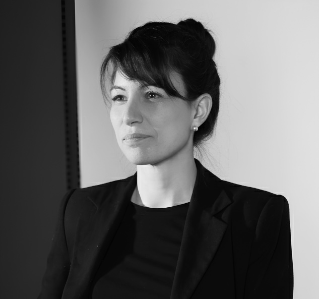
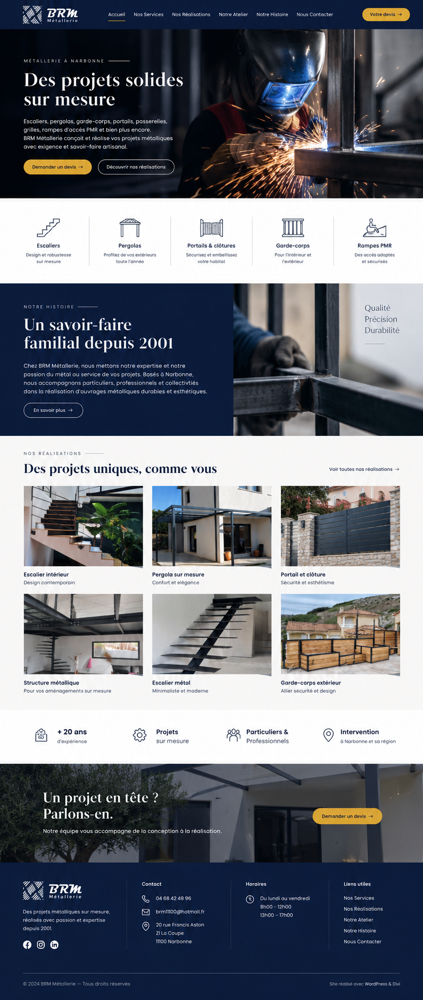
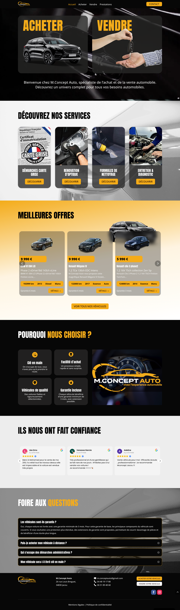
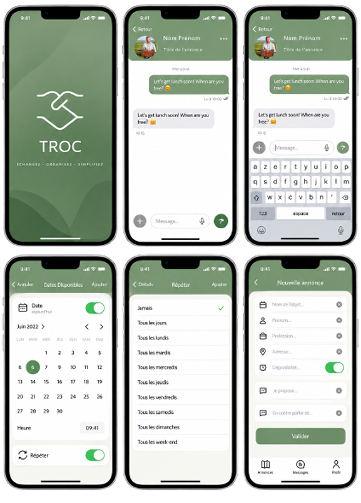
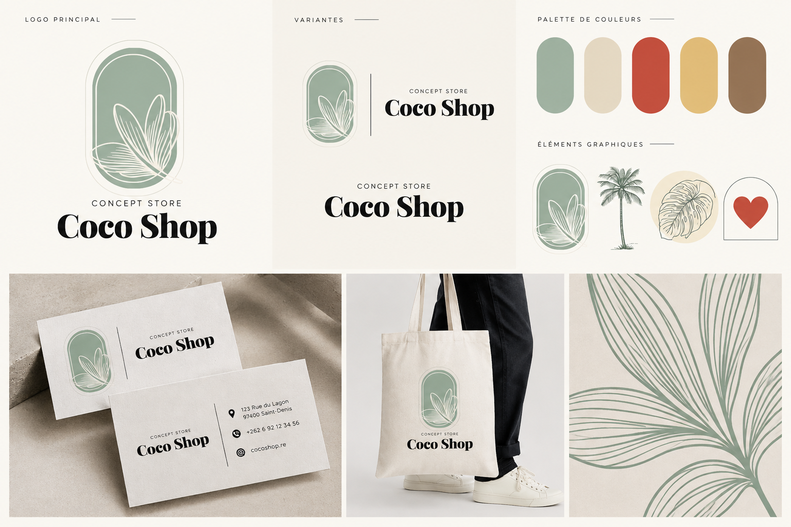
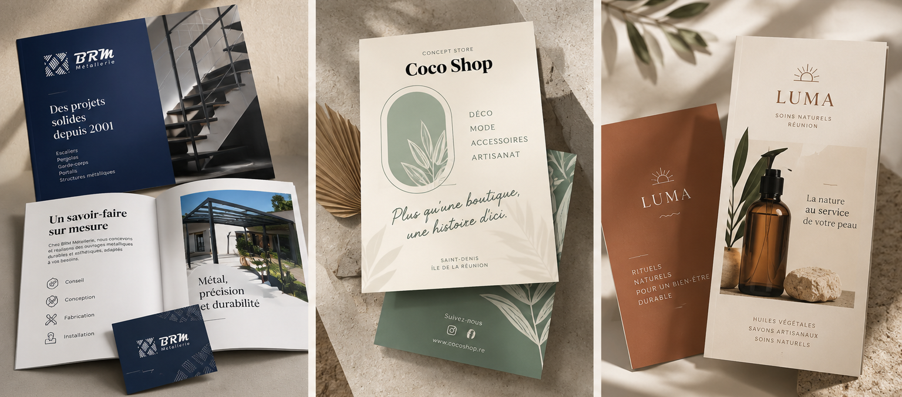
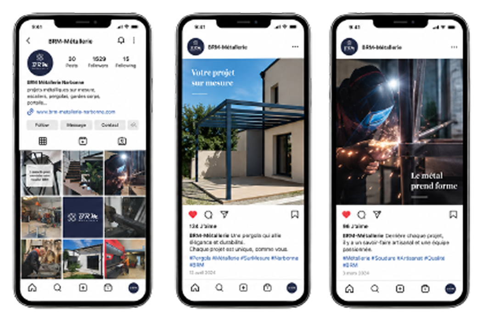
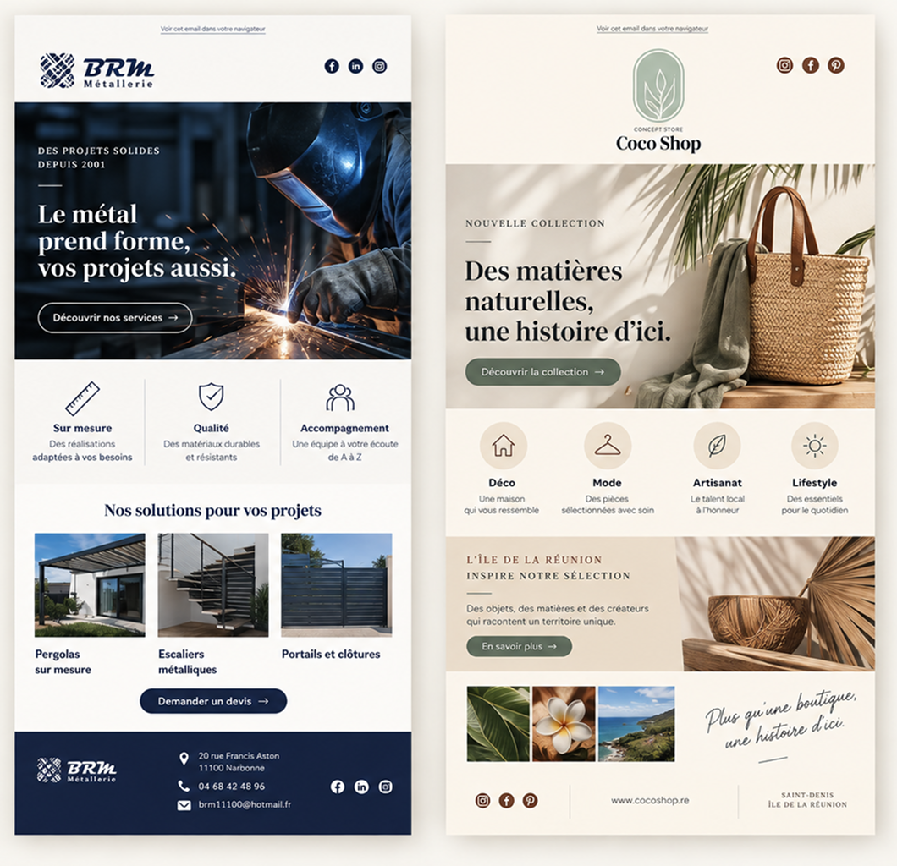
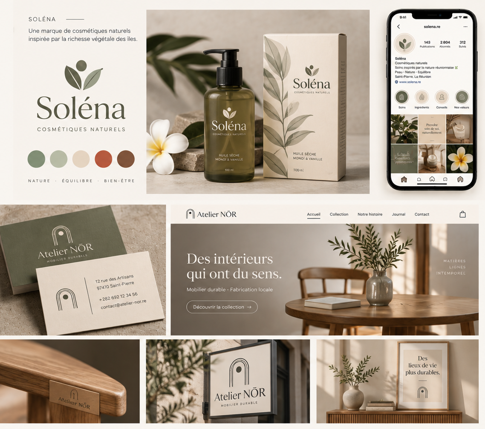
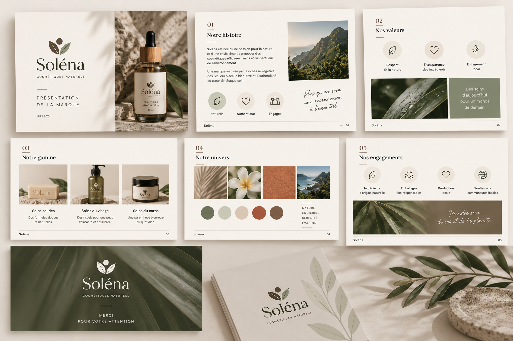

Gestion & coordination de projets
Recueil et analyse des besoins - Cahier des charges - Planning - Priorisation - Suivi - Reporting - Agile / Scrum - User Stories - Backlog - Notion - Trello
Marine Cathala-Gil

Gestion & coordination de projets digitaux
Communication - UX/UI - Création de contenus
Relation client - Organisation - Adaptabilité
Profil & compétences
En fin de Master Expert en Stratégie et Transformation Digitale, j'évolue à la croisée de la gestion de projet, de la communication et du digital. J'aime particulièrement faire le lien entre les besoins, les personnes et la réalisation concrète des projets.
Recueil et analyse des besoins - Cahier des charges - Planning - Priorisation - Suivi - Reporting - Agile / Scrum - User Stories - Backlog - Notion - Trello
Communication digitale - Supports print & digitaux — Rédaction — Réseaux sociaux — Newsletters — Création visuelle — Vidéo — Suite Adobe — Canva
Parcours utilisateurs - Personas - Wireframes - Prototypage - Figma - Balsamiq - Accessibilité numérique - Réflexion sur l'expérience utilisateur
WordPress - ACF / CPT - HTML / CSS - Notions PHP / JavaScript - SEO - Analytics - Compréhension des contraintes techniques et échanges avec les équipes de production
Projets sélectionnés
Stratégie, coordination, UX/UI, communication et web : quelques projets qui illustrent ma façon de transformer un besoin en solution concrète.
Communication globale - Web - Print - Digital
Repenser la communication globale d'une entreprise artisanale et harmoniser son image sur l'ensemble de ses supports.
Moderniser l'identité et construire une communication cohérente, du print au digital.
Identité visuelle - Site WordPress - Supports commerciaux - Social media - Vidéo - Newsletters - Google Ads
Gestion de projet - UX/UI - WordPress - Création graphique - Communication multicanale

Projet diplômant - Stratégie digitale - UX/UI - Web
Concevoir l'écosystème digital d'un négociant automobile, de la réflexion stratégique à la mise en ligne.
Définir le positionnement, l'expérience utilisateur et la présence digitale de l'entreprise.
Benchmark - Personas - Parcours UX - Wireframes - Maquettes Figma - Site WordPress - SEO
Stratégie - UX/UI - WordPress - ACF/CPT - HTML/CSS/PHP/JS - SEO

UX/UI - Développement mobile - SwiftUI
Concevoir puis développer une application mobile permettant d'échanger simplement des biens entre particuliers, de la réflexion UX jusqu'à l'implémentation de l'interface en SwiftUI.
Imaginer une expérience d'échange simple, intuitive et rapide, puis la traduire en une application mobile fonctionnelle.
Parcours utilisateur - Architecture de l'information - Wireframes - Interfaces - Prototype - Développement de l'application en SwiftUI
UX - UI - Wireframing - Prototypage - Swift - SwiftUI - Conception et développement mobile

Branding - Communication - Social Media - Print - Merchandising
Imaginer l'identité d'un concept store à La Réunion puis la décliner sur différents supports afin de construire un univers de marque cohérent, identifiable et adapté à ses différents points de contact.
Construire un univers de marque reconnaissable et traduire son positionnement en une identité cohérente sur les supports print, digitaux et physiques.
Identité visuelle - Univers graphique - Réseaux sociaux - Cartes de visite - Affiches - Tote bags - T-shirts - Déclinaisons de marque
Branding - Direction artistique - Création graphique - Communication visuelle - Social Media - Print - Merchandising

Création & communication
Print, digital, social media, vidéo ou création graphique : j'aime donner une forme concrète à un message et l'adapter à son support, à son objectif et à son public.
Ma pratique de la création vient compléter mon profil de gestion de projet : elle me permet de comprendre les contraintes de production, d'échanger avec les équipes créatives et de contribuer directement à la réalisation des supports lorsque le projet le nécessite.
Outils : Photoshop - Illustrator - InDesign - Canva - Figma - Montage vidéo

Conception et mise en page de supports destinés à présenter une activité, valoriser une offre et assurer la cohérence de l'identité visuelle.

Création de contenus adaptés aux codes des réseaux sociaux et déclinaison des identités de marque sur les formats digitaux.

Organisation de l'information, rédaction et conception de contenus pensés pour faciliter la lecture et transmettre efficacement le message.
Conception et montage de formats vidéo pour présenter une activité, valoriser un savoir-faire ou enrichir une communication digitale.

Recherche graphique et déclinaison d'identités sur différents points de contact print et digitaux.

Hiérarchisation de l'information et création de supports visuels clairs pour faciliter la compréhension et la présentation d'un projet.
Parcours
Mon parcours s'est construit autour d'un même fil rouge : comprendre les besoins, créer une relation de confiance, coordonner des interlocuteurs et trouver des solutions concrètes. Aujourd'hui, j'applique cette expérience aux projets digitaux et de communication.
Depuis 2024 · Alternance
Attrap'Temps - Agence de communication
Accompagnement de 30 à 50 clients : recueil des besoins, coordination des projets, communication et suivi de production.
Gestion de projet - Relation client - Communication - WordPress - Stratégique marketing
2015 – 2020
Corsair International · Paris-Orly
Une expérience exigeante qui a renforcé mon sens du service, ma capacité d'adaptation et la gestion des imprévus.
Relation client - Coordination - Réactivité - Gestion des situations complexes
Expériences antérieures
BtoB - BtoC - Hôtellerie-restauration
Des expériences qui ont développé mon écoute, mon organisation et mon sens du service.
Depuis 2024 · En cours
Objectif 3W - Montpellier - RNCP36905
Gestion de projet - Stratégie digitale - Agile - UX - Transformation numérique
2023 – 2024
Objectif 3W - Montpellier
UX/UI - Interfaces - Communication digitale - Création graphique
2023
Apple Foundation Program Extended - Simplon Toulouse
Certification CMS WordPress TPE / PME - Simplon Montpellier
Contact
Je recherche aujourd'hui un environnement structuré où je pourrai contribuer à des projets de communication et digitaux, travailler avec différents métiers et continuer à développer mes compétences.
J'apprécie particulièrement les missions qui mêlent coordination, relationnel, création et digital, avec de l'autonomie mais aussi un véritable cadre d'équipe.
Ouverte aux opportunités